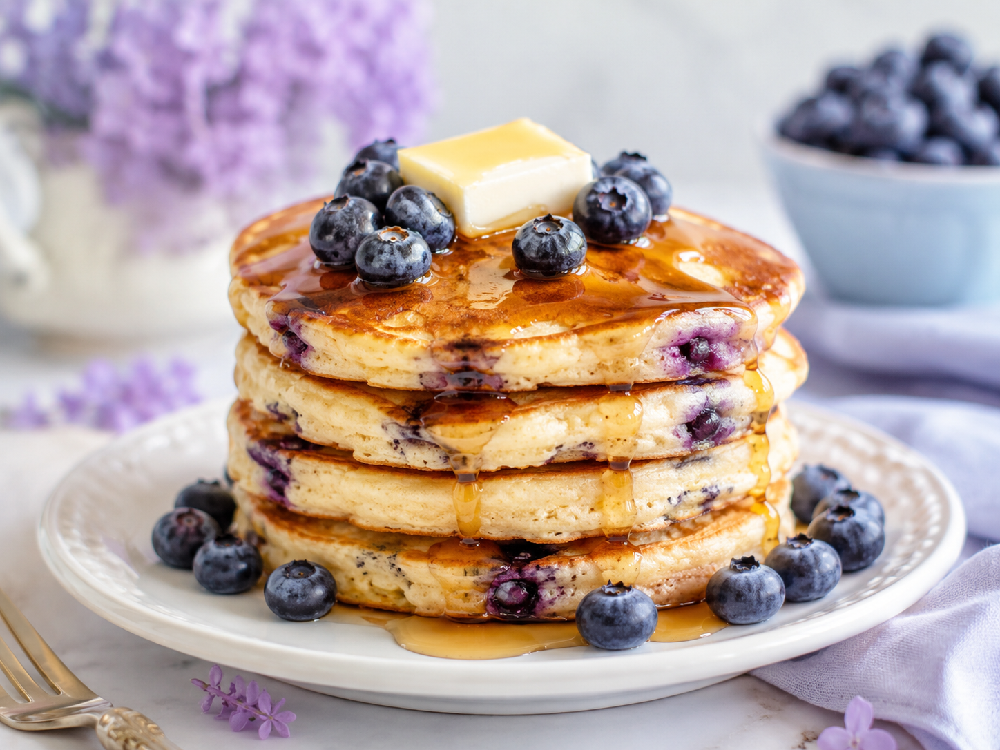
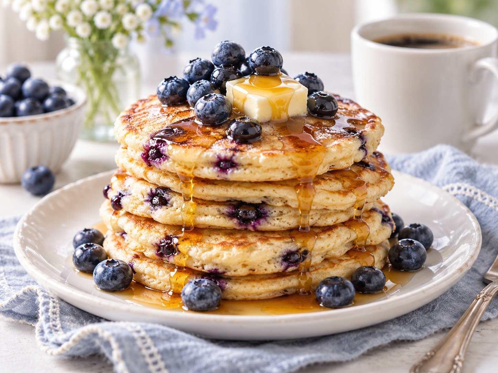
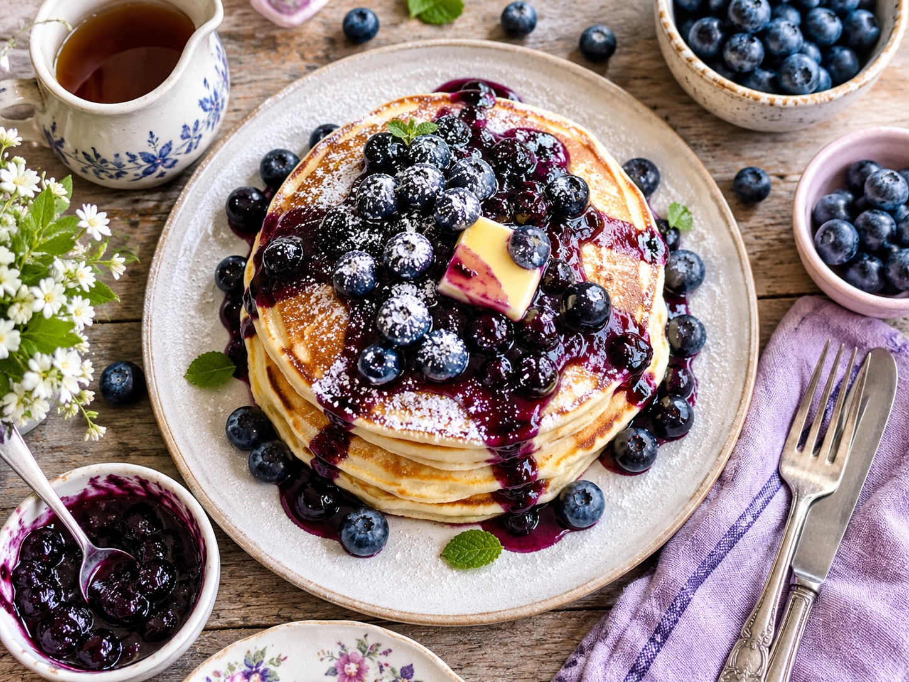
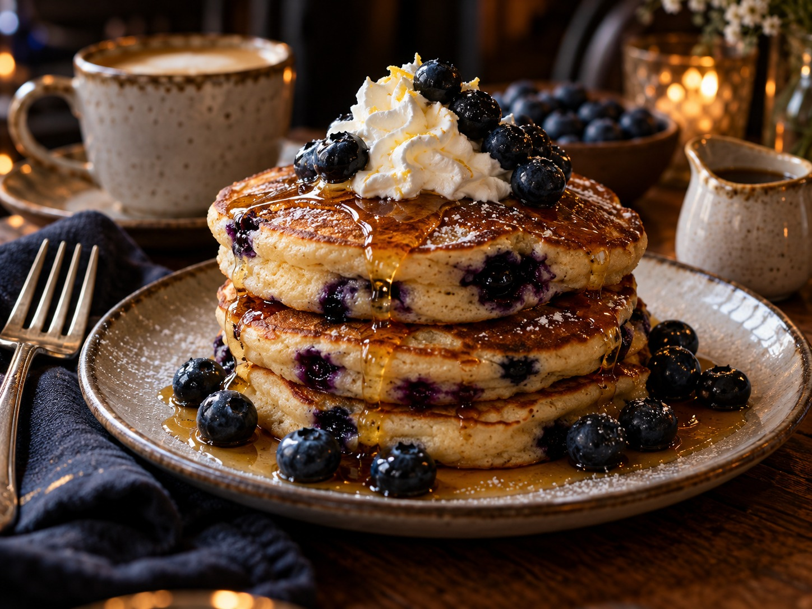

Blueberry Pancakes ♡
Fluffy, soft, and filled with sweet blueberries.
⏱ 10 min
Prep Time
⏱ 15 min
Cook Time
🥞 Easy
Difficulty
☆ 4.9
128 reviews
Soft and fluffy pancakes filled with juicy blueberries and served with sweet maple syrup. Perfect for breakfast, brunch, or whenever you want something sweet and comforting. ♡